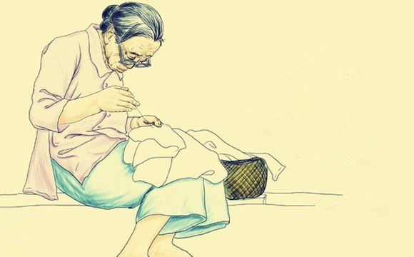

《游子吟》
慈母手中线，游子身上衣。
临行密密缝，意恐迟迟归。
谁言寸草心，报得三春晖。
这首诗艺术地再现了人所共感的平凡而又伟大的人性美，所以千百年来赢得了无数读者强烈的共鸣。对于在外游子来说是百听不厌的诗词，抒发自己内心的真实情感。
11月6日
星期四
感恩节
1962年9月，“五月花号”轮船载着102名清教徒及其家属离开英国驶向北美大 陆，经过两个多月的艰苦航行，在马萨诸塞的普利茅斯登陆上岸，从此定居下来。第一个冬天，由于食物不足、天气寒冷、传染病肆虐和过度劳累，这批清教徒一下子死去了一半以上。
第二年春天，当地印第安部落酋长马萨索德带领心地善良的印第安人，给了清教徒谷物种子，并教他们打猎、种植庄稼、捕鱼等。在印第安人的帮助下，清教徒们当年获得了大丰收。首任总督威廉·布莱德福为此建议设立一个节日，庆祝丰收，感谢上帝的恩赐。同时，还想借此节日加强白人与印第安人的和睦关系。
1621年11月下旬的星期四，清教徒们和马萨索德带来的90名印第安人欢聚一 堂，庆祝美国历史上第一个感恩节。男性清教徒外出打猎、捕捉火鸡，女人们则在家里用玉米、南瓜、红薯和果子等做成美味佳肴。就这样，白人和印第安人围着篝 火，边吃边聊，还载歌载舞，整个庆祝活动持续了三天。
初时感恩节没有固定日期，由各州临时决定。直到美国独立后的1863年，林肯总统宣布感恩节为全国性节日。感恩节庆祝活动便定在这一天，直到如今。即11月的第四个星期四。
至此，火鸡成为感恩节的标志！
用心去感恩你想感谢的人，真诚的一个微笑，一个拥抱会拉近人与人之间的关系。
给父母的寄语
现在的我孤身一人在外拼搏学业，为的只是以后。在来这个学校之前，和父亲、母亲都因此吵过架，就在报道的当天还以为一些事情闹得不愉快。不过归根结底还是自己的过错。父亲让我报考此学校，我只是试一试，没想真的过来读书，因为如果过来的话第一届我将会是第一届学生，我对黑马程序员和传智播客的了解不是很多，甚至都不及我父亲的一半。因为我害怕我过来的话会变成小白鼠，又一次的变成试验品。在文化课上，我就当过一次小白鼠，所以不再想要当小白鼠，刚开始对这个学校也是很多的抵触心理，后边才开始慢慢接受。
直到现在，我挺感谢我的父亲坚持了他的决定，而不是让我为所欲为，原来不管是什么事情，都会遵从我的意见。从课堂上学到知识以及我们现在可以做静态网页，让我知道了传智的实力，让我非常感谢我父亲的决策。
在父亲临走前，给我留下了很长的一段话，让时时刻刻的都记在心中，一直给我启迪，给我在进行不下去的时候的动力。
从我诞生来到这个世界--> 在父母的帮助下咿呀学语--> 开始自己的学业--> 直到现在大学生活，每一步都需要父母亲的帮扶，不然我们不可能这么轻松的走到现在。像美国的同龄孩子父母早已不给生活费，独立生存。我们还在靠着父母的生活费来读书，所以父母是我们一生都值得感谢的人。
平时不善于和你们表达。在此特殊的节日里，借此机会，想和你们说一声辛苦了，我长大了可以独立去承受一部分了，有需要的话也会给你们分担一部分。在不久的将来，我就要去步入社会这个大家庭了，我可以生活的很好，减少你们的担心。真的感谢你们，爸，妈，我爱你们！
---木子